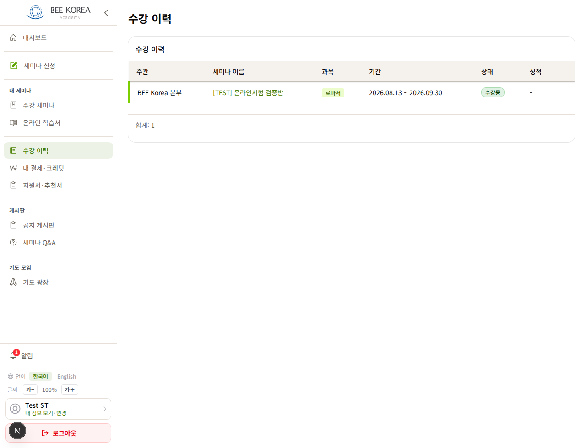
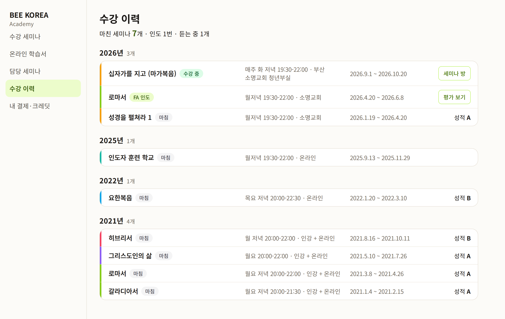
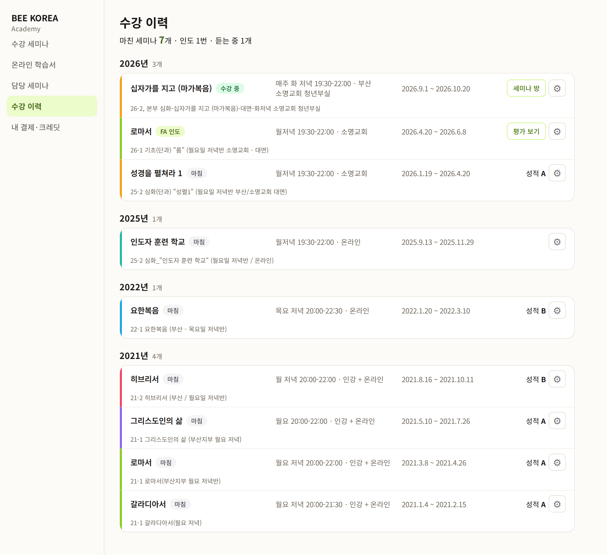
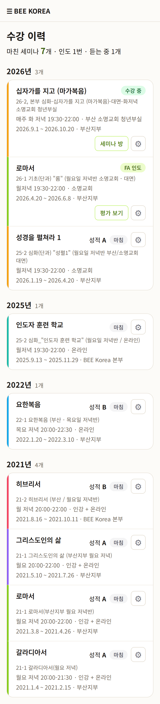
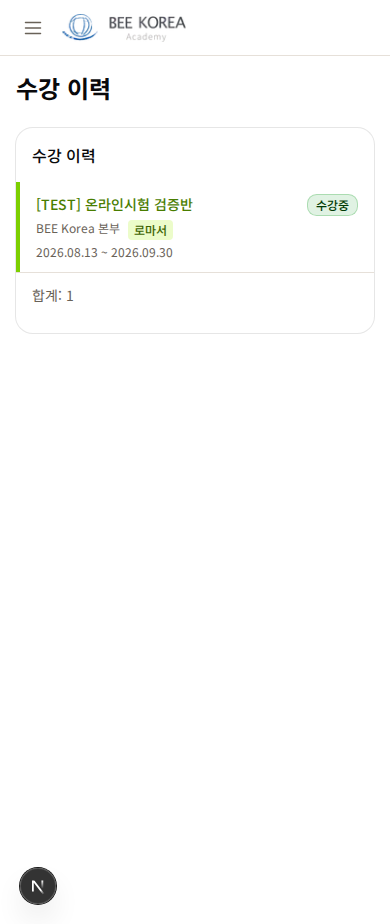
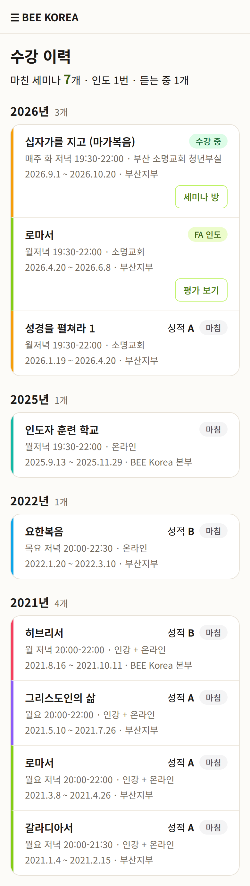

LMS 수강 이력 — 디자인 시안 3차
2026-10-12 · 3차: 단추 작게 · 세미나 관리 = 톱니바퀴 · 2차: PC 한 줄 · 관리자용 줄 따로 · 학생이 「내가 지금까지 무엇을 들었나」를 보는 화면 · 반 정보는 실제 값(9개 반을 들은 학생 한 분 — 이름 없음) · 아직 적용 전
무엇이 바뀌나
- PC는 한 줄(과목 · 언제·어디서 · 기간 · 단추) — 1차는 세 줄이라 줄 높이가 약 100px이었는데, 이제 약 55px입니다(태남 지적)
- 제목 = 과목 이름 — 지금은 「26-2, 본부 심화-십자가를 지고 (마가복음)-대면-화저녁 …」 같은 관리용 반 이름이 제목입니다(세미나 방·내 세미나와 같은 규칙)
- 해(年)별로 묶음 — 종강일 기준(통계 규칙). 학생 4명 중 1명은 4개 반 이상을 들었습니다(11,582명 중 2,902명)
- 맨 위 한 줄 「마친 세미나 7개 · 인도 1번 · 듣는 중 1개」 — 강조하는 숫자는 하나
- 언제·어디서(요일·시간·장소)를 함께 — 지금은 날짜만
- 인도한 반은 「FA 인도」 표시 — 지금은 성적 칸이 「-」라 왜 비었는지 모릅니다
- 그림만 있는 단추 → 글자 단추: 평가 그림 → [평가 보기] · 톱니바퀴(본부만) → [세미나 관리] · 작은 「취소」 → [신청 취소]. 듣는 중인 반은 [세미나 방]
- 단추는 작게(36px, 테두리만) — [세미나 방]·[평가 보기]는 줄의 주인공이 아니라 갈 곳 표시. 세미나 관리 목록의 [세미나 방]과 같은 모양(태남 지적)
- 같은 「수강 이력」 제목이 두 번(화면 제목 + 카드 제목) 나오던 것 하나로
PC


본부 관리자(Lv1~2)가 볼 때
관리용 반 이름을 한 줄 더 보여 주고(전체 글자, 자르지 않음), 줄마다 톱니바퀴(세미나 관리 상세 — 다른 화면과 같은 뜻, 마우스를 올리면 「세미나 관리」)를 둡니다. 본부 화면 기준이라 그림 단추를 허용합니다. 학생·인도자에게는 둘 다 안 보입니다.


휴대폰


시안에 없는 줄 모양: 「신청 중」(+[신청 취소]) · 「이월」(+안내 글) — 지금 있는 것 그대로 같은 줄 모양으로 옮깁니다.
정해진 것 (10/12)
- 관리용 반 이름 — 학생에게는 빼고, 본부 관리자에게만 한 줄로 보여 줍니다 + 톱니바퀴(세미나 관리)
- 단추 크기 — [세미나 방]은 작은 테두리 단추, 세미나 관리는 톱니바퀴 — 태남 「너무 크다」
- [세미나 방] 단추는 듣는 중인 반에만, 마친 반은 줄을 누르면 들어갑니다 — 태남 「그렇게 해도 좋아」